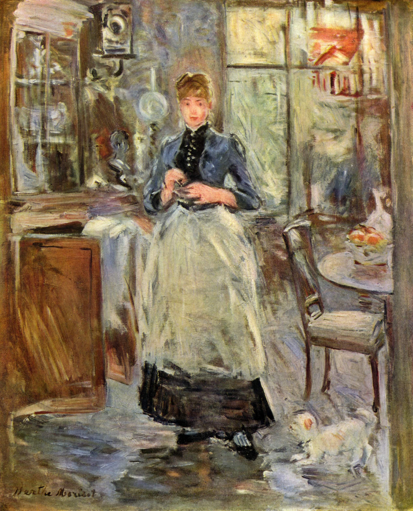

Tags: furniture-and-decoration, doors-and-windows
Style: Impressionism
Artist: Morisot Berthe
Title: In the Dining Room
Year: 1875
Genre: genre painting
Categories: tobacco_shop (10.5%); barbershop (7.8%); toyshop (6.9%); bookshop (5.6%); altar (5.5%)